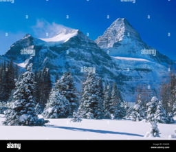
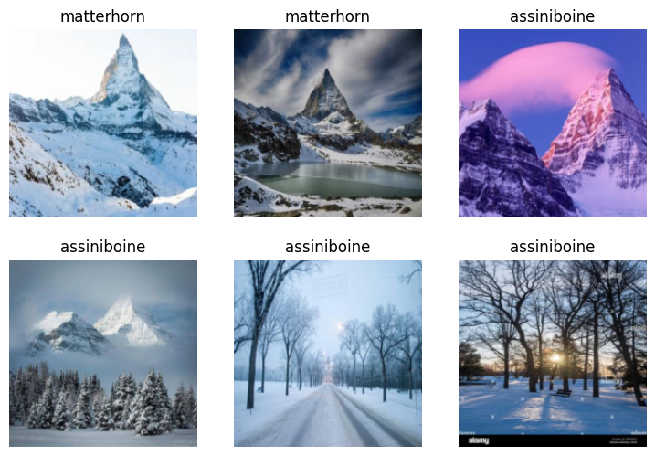
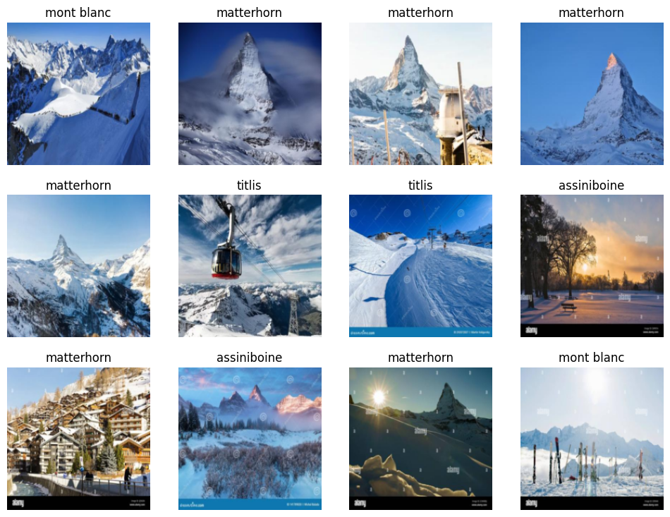

from ddgs import DDGS
from fastcore.all import *
def search_images(keywords, max_images=200): return L(DDGS().images(keywords, max_results=max_images)).itemgot('image')
import time, jsonMountain classifier
Inspired by fastai lesson1, I want to create an image classifier. I love travelling and I think it will be challenging for a model to classify similar-looking mountains. So, I chose the Matterhorn, my favourite mountain. I searched the internet and found Mount Assiniboine, the Matterhorn of the Rockies.
The Matterhorn vs Mount Assiniboine
Step 1: Download images
To make it more challenging, I chose winter images. That way, the mountains are covered with snow and look more similar.
from fastdownload import download_url
from fastai.vision.all import *
download_url(search_images('matterhorn in winter', max_images=1)[0], 'matterhorn.jpg', show_progress=False)
Image.open('matterhorn.jpg').to_thumb(256,256)download_url(search_images('assiniboine in winter', max_images=1)[0], 'assiniboine.jpg', show_progress=False)
Image.open('assiniboine.jpg').to_thumb(256,256)
Those mountains look similar👍🏻. Next, I downloaded more images and saved them at /mountains/matterhorn and /mountains/assiniboine.
searches = 'matterhorn','assiniboine'
path = Path('mountains')
for o in searches:
dest = (path/o)
dest.mkdir(exist_ok=True, parents=True)
download_images(dest, urls=search_images(f'{o} in winter'))
time.sleep(5)
resize_images(path/o, max_size=400, dest=path/o)Next, I verified images and removed corrupted images.
failed = verify_images(get_image_files(path))
failed.map(Path.unlink)
len(failed)0Next, I used DataBlock to create DataLoaders and viewed sample images from it.
dls = DataBlock(
blocks=(ImageBlock, CategoryBlock),
get_items=get_image_files,
splitter=RandomSplitter(valid_pct=0.2, seed=42),
get_y=parent_label,
item_tfms=[Resize(192, method='squish')]
).dataloaders(path, bs=32)
dls.show_batch(max_n=6)
Step 2: Train the model
learn = vision_learner(dls, resnet18, metrics=error_rate)
learn.fine_tune(5)| epoch | train_loss | valid_loss | error_rate | time |
|---|---|---|---|---|
| 0 | 1.326607 | 0.827004 | 0.411765 | 00:14 |
| epoch | train_loss | valid_loss | error_rate | time |
|---|---|---|---|---|
| 0 | 0.460767 | 0.435698 | 0.235294 | 00:21 |
| 1 | 0.308592 | 0.249649 | 0.088235 | 00:21 |
| 2 | 0.224121 | 0.258147 | 0.117647 | 00:21 |
| 3 | 0.180325 | 0.252384 | 0.117647 | 00:21 |
| 4 | 0.144590 | 0.231590 | 0.117647 | 00:21 |
Step 3: Use the model for prediction
is_matterhorn,_,probs = learn.predict(PILImage.create('matterhorn.jpg'))
print(f"This is a: {is_matterhorn}.")
print(f"Probability it's a matterhorn: {probs[0]:.4f}")This is a: matterhorn.
Probability it's a matterhorn: 0.0000is_matterhorn,_,probs = learn.predict(PILImage.create('assiniboine.jpg'))
print(f"This is a: {is_matterhorn}.")
print(f"Probability it's a assiniboine: {probs[1]:.4f}")This is a: matterhorn.
Probability it's a assiniboine: 0.6165The result was confusing at first. For the Matterhorn image, the model predicted that it was the Matterhorn, but the probability that it’s the Matterhorn is 0. Also, for the Mount Assiniboine image, the model predicted that it was the Matterhorn, but the probability that it’s Mount Assiniboine is 0.6165.
I thought class 0 was Matterhorn and class 1 was Assiniboine since I downloaded the Matterhorn images first. However, after reading the fastai doc and discovering that the CategoryBlock sorts classes alphabetically if not specified. That’s why class 0 is Assiniboine and class 1 is Matterhorn.
We can check the class index and class name mapping by using the vocab attribute of the DataLoaders
print(f"Class names: {dls.vocab}")Class names: ['assiniboine', 'matterhorn']So I fixed the code using the class index and label from the vocab
for i, class_name in enumerate(dls.vocab):
mountain_name,_,probs = learn.predict(PILImage.create(f"{class_name}.jpg"))
print(f"This is a: {class_name}.")
print(f"Model predicts that it is a: {mountain_name}.")
print(f"Probability it's a {class_name}: {probs[i]:.4f}\n")This is a: assiniboine.
Model predicts that it is a: matterhorn.
Probability it's a assiniboine: 0.3835
This is a: matterhorn.
Model predicts that it is a: matterhorn.
Probability it's a matterhorn: 1.0000
But if we want class 0 to be Matterhorn and class 1 to be Assiniboine, we can pass the class name to the vocab of the CategoryBlock and set sort=False.
dls2 = DataBlock(
blocks=(ImageBlock, CategoryBlock(vocab=['matterhorn', 'assiniboine'], sort=False)),
get_items=get_image_files,
splitter=RandomSplitter(valid_pct=0.2, seed=42),
get_y=parent_label,
item_tfms=[Resize(192, method='squish')]
).dataloaders(path, bs=32)print(f"Class names: {dls2.vocab}")Class names: ['matterhorn', 'assiniboine']However, the model’s result is not good enough. It predicted wrong, so I will fine-tune it more.
learn.fine_tune(5)| epoch | train_loss | valid_loss | error_rate | time |
|---|---|---|---|---|
| 0 | 0.013699 | 0.264133 | 0.117647 | 00:12 |
| epoch | train_loss | valid_loss | error_rate | time |
|---|---|---|---|---|
| 0 | 0.013848 | 0.313575 | 0.117647 | 00:14 |
| 1 | 0.010381 | 0.432843 | 0.147059 | 00:13 |
| 2 | 0.013321 | 0.674214 | 0.235294 | 00:13 |
| 3 | 0.010601 | 0.601326 | 0.205882 | 00:13 |
| 4 | 0.009109 | 0.330560 | 0.117647 | 00:13 |
for i, class_name in enumerate(dls.vocab):
mountain_name,_,probs = learn.predict(PILImage.create(f"{class_name}.jpg"))
print(f"This is a: {class_name}.")
print(f"Model predicts that it is a: {mountain_name}.")
print(f"Probability it's a {class_name}: {probs[i]:.4f}\n")This is a: assiniboine.
Model predicts that it is a: assiniboine.
Probability it's a assiniboine: 0.9114
This is a: matterhorn.
Model predicts that it is a: matterhorn.
Probability it's a matterhorn: 0.9913
Better. It predicted correctly this time🎉.
Multiclass Classification
To make it more challenging, I want a model that can classify many mountains.
Step 1: Download images
I downloaded two more mountain images: Mont Blanc and Titlis.
download_url(search_images('mont blanc in winter', max_images=1)[0], 'mont blanc.jpg', show_progress=False)
Image.open('mont blanc.jpg').to_thumb(256,256)download_url(search_images('titlis in winter', max_images=1)[0], 'titlis.jpg', show_progress=False)
Image.open('titlis.jpg').to_thumb(256,256)Then, I downloaded and saved the new images in the same parent folder /mountains.
└── mountains/
├── matterhorn/
├── assiniboine/
├── mont blanc/
└── titlis/The rest is the same as binary classification above.
searches = 'mont blanc','titlis'
path = Path('mountains')
for o in searches:
dest = (path/o)
dest.mkdir(exist_ok=True, parents=True)
download_images(dest, urls=search_images(f'{o} in winter'))
time.sleep(5)
resize_images(path/o, max_size=400, dest=path/o)failed = verify_images(get_image_files(path))
failed.map(Path.unlink)
len(failed)1dls = DataBlock(
blocks=(ImageBlock, CategoryBlock),
get_items=get_image_files,
splitter=RandomSplitter(valid_pct=0.2, seed=42),
get_y=parent_label,
item_tfms=[Resize(192, method='squish')]
).dataloaders(path, bs=32)
dls.show_batch(max_n=12)
Step 2: Train the model
learn = vision_learner(dls, resnet101, metrics=error_rate)
learn.fine_tune(5)| epoch | train_loss | valid_loss | error_rate | time |
|---|---|---|---|---|
| 0 | 2.270211 | 1.331686 | 0.485714 | 02:05 |
| epoch | train_loss | valid_loss | error_rate | time |
|---|---|---|---|---|
| 0 | 0.645704 | 0.985022 | 0.342857 | 02:53 |
| 1 | 0.422413 | 0.975001 | 0.271429 | 03:01 |
| 2 | 0.340291 | 0.947498 | 0.257143 | 02:53 |
| 3 | 0.259572 | 0.723719 | 0.200000 | 02:55 |
| 4 | 0.203068 | 0.686363 | 0.185714 | 02:57 |
Step 3: Use the model for prediction
for i, class_name in enumerate(dls.vocab):
mountain_name,_,probs = learn.predict(PILImage.create(f"{class_name}.jpg"))
print(f"This is a: {class_name}.")
print(f"Model predicts that it is a: {mountain_name}.")
print(f"Probability it's a {class_name}: {probs[i]:.4f}\n")This is a: assiniboine.
Model predicts that it is a: mont blanc.
Probability it's a assiniboine: 0.3844
This is a: matterhorn.
Model predicts that it is a: matterhorn.
Probability it's a matterhorn: 1.0000
This is a: mont blanc.
Model predicts that it is a: mont blanc.
Probability it's a mont blanc: 1.0000
This is a: titlis.
Model predicts that it is a: titlis.
Probability it's a titlis: 0.9990
Not bad. Correct 3/4.
learn.fine_tune(5)| epoch | train_loss | valid_loss | error_rate | time |
|---|---|---|---|---|
| 0 | 0.046293 | 0.733727 | 0.200000 | 02:09 |
| epoch | train_loss | valid_loss | error_rate | time |
|---|---|---|---|---|
| 0 | 0.027783 | 0.858846 | 0.185714 | 02:56 |
| 1 | 0.038438 | 1.451459 | 0.242857 | 03:03 |
| 2 | 0.151360 | 1.095311 | 0.200000 | 02:50 |
| 3 | 0.185351 | 1.092717 | 0.157143 | 02:52 |
| 4 | 0.166083 | 0.955429 | 0.157143 | 02:51 |
for i, class_name in enumerate(dls.vocab):
mountain_name,_,probs = learn.predict(PILImage.create(f"{class_name}.jpg"))
print(f"This is a: {class_name}.")
print(f"Model predicts that it is a: {mountain_name}.")
print(f"Probability it's a {class_name}: {probs[i]:.4f}\n")This is a: assiniboine.
Model predicts that it is a: assiniboine.
Probability it's a assiniboine: 0.8058
This is a: matterhorn.
Model predicts that it is a: matterhorn.
Probability it's a matterhorn: 1.0000
This is a: mont blanc.
Model predicts that it is a: mont blanc.
Probability it's a mont blanc: 1.0000
This is a: titlis.
Model predicts that it is a: titlis.
Probability it's a titlis: 1.0000
The model did an impressive job. Well done! 👏🏻